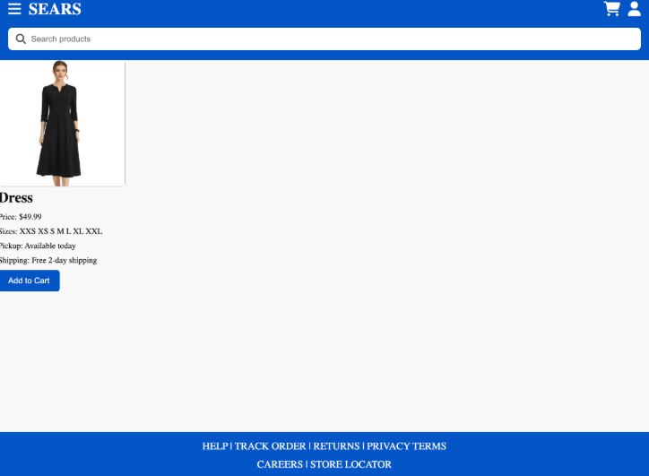
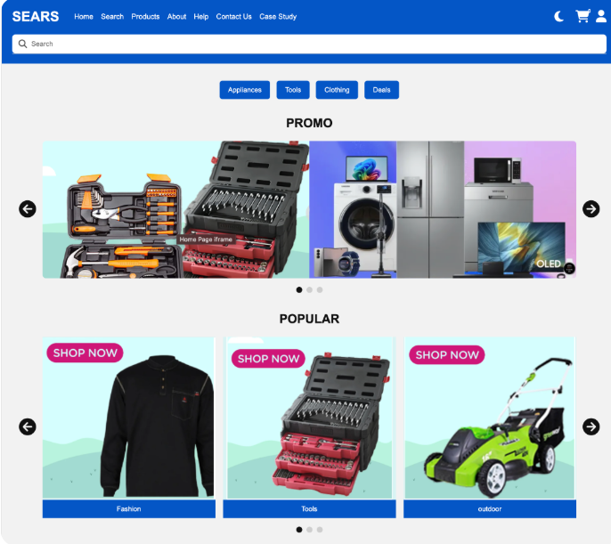
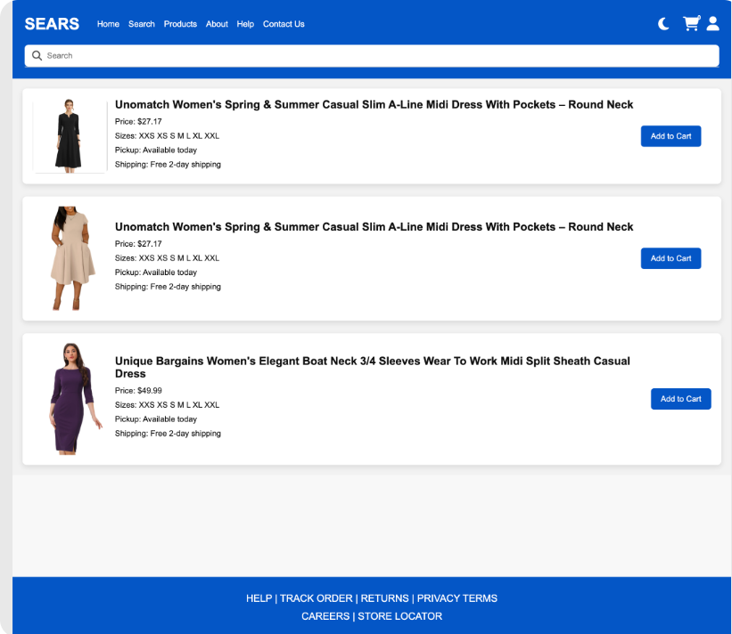
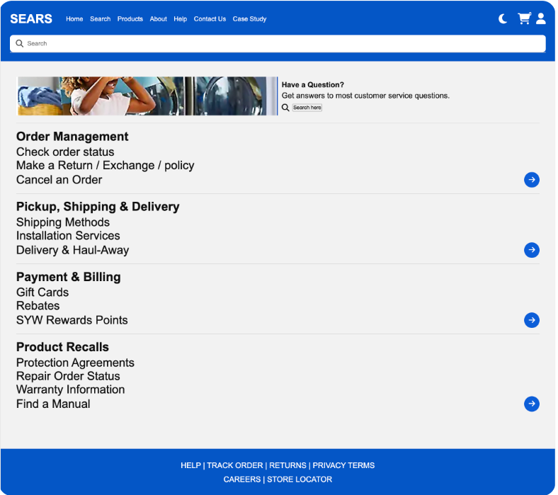

The original website felt overwhelming and difficult to navigate. Users had trouble finding important features such as search, cart, and help pages. The layout lacked clarity and made it harder for users to complete tasks efficiently.
I focused on front-end layout, navigation improvements, and usability. I worked on ensuring pages were easier to read and navigation between sections was smoother.

Before: Homepage layout

Before: Search experience
I reviewed user flow and simplified navigation. I improved layout structure, reduced clutter, and made pages feel more consistent across the site.
The redesign focused on clarity and usability. Navigation was made consistent, and sections were organized to help users scan content quickly.
Testing showed users struggled with navigation visibility. Based on feedback, I improved button placement and simplified layout structure.

After: Improved homepage

After: Improved layout
This project helped me understand the importance of usability, responsive design, and clear navigation. It also strengthened my ability to work in a team environment.